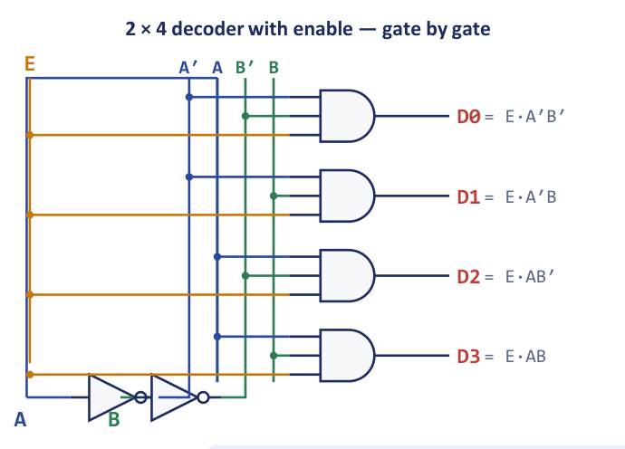
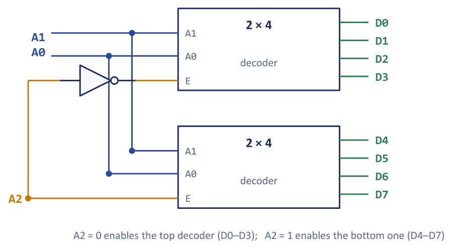
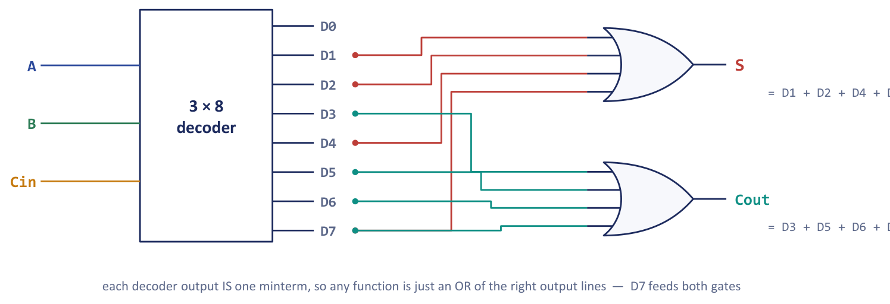
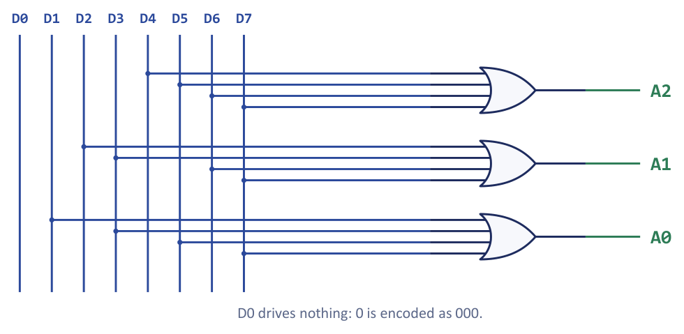
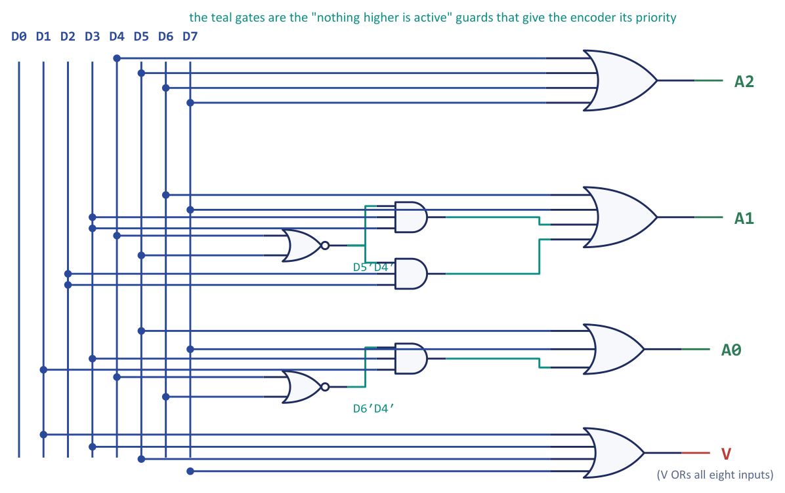
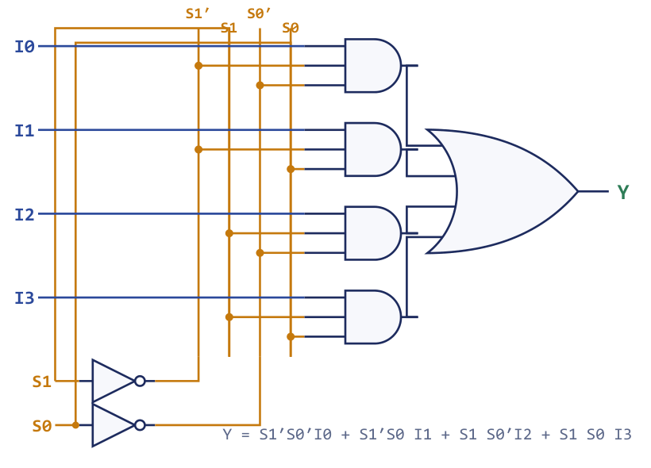
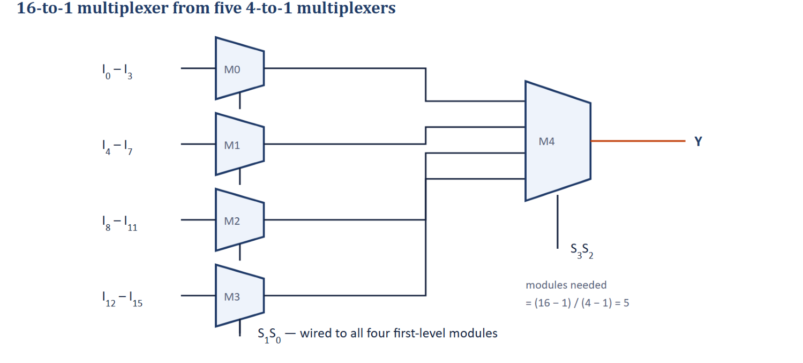
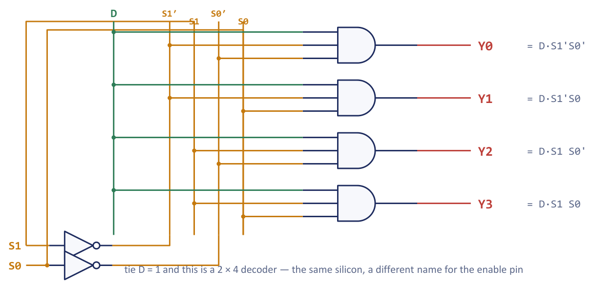
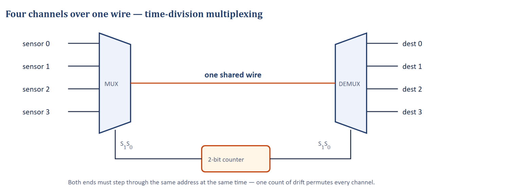

Chapter 5: Decoders, Encoders and Multiplexers¶
The steering components: choosing, generating and routing information with gates
Adders transform data. A second family of components does something just as important and rather different: it steers data. A decoder turns a compact number into a single active line, so that an address can wake up exactly one register, one memory row or one device. An encoder does the reverse and answers the question "which line fired?" with a short binary code. A multiplexer chooses one of many inputs and passes it to a single output, so that many sources can share one destination; a demultiplexer sends a single input to one of many destinations. Open the block diagram of almost any digital system, a processor, a memory or an interface card, and you will find these four boxes everywhere.
This chapter builds each of them from gates, using the same design procedure as in the previous chapter, and then shows what makes them so valuable: they are universal function generators. A decoder produces every minterm of its inputs, so a decoder plus a few OR gates realises any function with no simplification at all. A multiplexer selects one value per input combination, so a multiplexer realises any function by tying its data inputs to 0, 1 or a variable. The comparison at the end of the chapter, and the memories of the next, show that both are really the same idea as storing a truth table.
The chapter also introduces three techniques you will use repeatedly in later chapters: expansion (building a large component from small ones, with the enable input), the priority rule (what to do when several requests arrive at once) and time-division multiplexing (sharing one wire among many signals by taking turns).
What you will learn
- Design decoders, including active-low (NAND) decoders, and expand small decoders into large ones using enable inputs.
- Implement Boolean functions with a decoder and OR gates, and decide when the complement of a function is cheaper.
- Design octal-to-binary, decimal-to-BCD and priority encoders, and explain the ambiguity of a simple encoder and the role of the valid output.
- Implement Boolean functions on multiplexers using input reduction, and build large multiplexers as trees of small ones.
- Explain the demultiplexer as a decoder with enable, use it as a function generator and as the receiving end of a time-division link, and compare all four components.
5.1 Decoders¶
A decoder is a combinational circuit that converts a binary code on \(n\) input lines into up to \(2^n\) output lines, one for each input combination, and asserts exactly one of them at a time. The asserted output corresponds to the minterm of the input variables, so output \(D_i\) is the minterm \(m_i\). For this reason a decoder is also called a minterm generator. A decoder with \(n\) inputs and \(2^n\) outputs is described as an \(n\)-to-\(2^n\) line decoder, or an \(n \times 2^n\) decoder.
A decoder turns a compact number into a place. Picture an apartment block: the 3-bit address \(101\) does not describe an apartment, it points at apartment 5 and lights up that door alone, leaving the other seven dark. "Exactly one line hot" is called one-hot behaviour, and it is how a processor turns the address bits of an instruction into a single "wake up" signal for one register, one memory row or one device. A decoder is the hardware answer to the question "of my \(2^n\) possibilities, which single one did you mean?"
The 3-to-8 decoder¶
Table 5.1 is the truth table of the 3-to-8 decoder, with active-high outputs, when it is enabled.
| \(A\) | \(B\) | \(C\) | \(D_0\) | \(D_1\) | \(D_2\) | \(D_3\) | \(D_4\) | \(D_5\) | \(D_6\) | \(D_7\) |
|---|---|---|---|---|---|---|---|---|---|---|
| 0 | 0 | 0 | 1 | 0 | 0 | 0 | 0 | 0 | 0 | 0 |
| 0 | 0 | 1 | 0 | 1 | 0 | 0 | 0 | 0 | 0 | 0 |
| 0 | 1 | 0 | 0 | 0 | 1 | 0 | 0 | 0 | 0 | 0 |
| 0 | 1 | 1 | 0 | 0 | 0 | 1 | 0 | 0 | 0 | 0 |
| 1 | 0 | 0 | 0 | 0 | 0 | 0 | 1 | 0 | 0 | 0 |
| 1 | 0 | 1 | 0 | 0 | 0 | 0 | 0 | 1 | 0 | 0 |
| 1 | 1 | 0 | 0 | 0 | 0 | 0 | 0 | 0 | 1 | 0 |
| 1 | 1 | 1 | 0 | 0 | 0 | 0 | 0 | 0 | 0 | 1 |
Table 5.1. A 3-to-8 line decoder with active-high outputs (\(A\) is the most significant input).
Each output is the output of one AND gate, \(D_i = m_i\). For example, \(D_5\) corresponds to the input \(101\), so \(D_5 = A \cdot B' \cdot C\). The circuit therefore consists of eight three-input AND gates, fed by the three inputs and their complements (three inverters), and nothing else.
The enable input and the 2-to-4 decoder¶
Most decoders have an enable input \(E\). When \(E\) is inactive every output is held inactive whatever the address, and when \(E\) is active the decoder works normally. The enable is not decoration: it is what makes decoders expandable, and it lets one address bit act as a chip-select. The 2-to-4 decoder with enable has the following function table, in which \(\times\) means "don't care".
| \(E\) | \(A_1\) | \(A_0\) | \(D_0\) | \(D_1\) | \(D_2\) | \(D_3\) |
|---|---|---|---|---|---|---|
| 0 | \(\times\) | \(\times\) | 0 | 0 | 0 | 0 |
| 1 | 0 | 0 | 1 | 0 | 0 | 0 |
| 1 | 0 | 1 | 0 | 1 | 0 | 0 |
| 1 | 1 | 0 | 0 | 0 | 1 | 0 |
| 1 | 1 | 1 | 0 | 0 | 0 | 1 |
Table 5.2. A 2-to-4 decoder with an enable input \(E\).
The output equations show that the enable simply becomes an extra input of every AND gate:
Figure 5.1 shows the circuit, gate by gate: four three-input AND gates, two inverters and the enable line running to every gate.

NAND decoders and active-low outputs¶
Built from NAND gates instead of AND gates, a decoder has active-low outputs: the selected line goes to 0 and all the others stay at 1. Its enable is often active-low too, and written \(\overline{E}\). This is the form of most MSI decoder chips, for example the 74138. Active-low signalling is common in real hardware because in the older TTL logic a gate can sink more current than it can source, and because chip-select and memory-read lines are conventionally active-low, as the memory chapters will show.
Active-low does not mean broken
It is a mistake to read "active-low" as "the chip is off because 0 usually means false". Active-low is a naming convention, not a fault. On an active-low decoder the selected line is the one driven to 0 while every other line idles at 1; read the outputs as "the odd one out is the winner". The same idea appears on real chip pins written with an overbar: asserting them means pulling them low. Functionally an active-low decoder is the complement of the active-high version, \(D_i' = m_i'\).
Example 5.1: Which line is low?
Problem. An active-low 3-to-8 decoder is enabled and its input is \(ABC = 011\). Which output line is at logic 0, and what are the values of the other seven outputs?
Solution. \(011\) is decimal 3, so the selected output is \(D_3\). On an active-low decoder the selected line is driven to 0, and all the other lines stay at 1.
Answer. Only \(D_3 = 0\); the other seven outputs are all 1.
5.2 Decoder expansion¶
Small decoders with enable inputs combine to make larger ones. Figure 5.2 shows two 2-to-4 decoders that make a 3-to-8 decoder. The low-order address bits \(A_1A_0\) go to the address inputs of both decoders, so each decoder decodes the same two bits. The most-significant bit \(A_2\) goes to the enable of one decoder directly and, through an inverter, to the enable of the other. When \(A_2 = 0\) the upper decoder is enabled and produces \(D_0\) to \(D_3\), while the lower decoder is disabled and holds all its outputs inactive; when \(A_2 = 1\) the roles are exchanged and the lower decoder produces \(D_4\) to \(D_7\). Exactly one of the eight outputs is active at any time.

Without an enable input a decoder cannot be expanded at all, because every one of its outputs would be active whenever its own two address bits matched, regardless of the third address line. The enable is therefore not optional.
The same method scales up. A 4-to-16 decoder is two 3-to-8 decoders sharing the low-order bits \(A_2A_1A_0\), with \(A_3\) (and its complement) driving the two enables. In general, expanding by one address line doubles the number of decoders, which is why large decoders are built as trees. If the module is a \(k\)-to-\(2^k\) decoder with enable, then an \(n\)-to-\(2^n\) decoder needs
modules, plus a small decoder to produce the enable signals when there are more than two modules. Thus a 4-to-16 decoder from 3-to-8 modules needs \(2^{4-3} = 2\) modules, but from 2-to-4 modules it needs \(2^{4-2} = 4\) output decoders plus one more 2-to-4 decoder, driven by \(A_3A_2\), to generate their four enables: five modules in two levels.
This is exactly the trick used to build a large memory from small chips: the low-order address lines go to every chip, and the high-order lines choose which chip through the chip-select input. Decoder expansion and memory expansion are literally the same circuit idea at two scales; we meet the second in Chapter 6.
Example 5.2: Tracing a 4-to-16 decoder
Problem. Two 3-to-8 decoders with active-high enables make a 4-to-16 decoder with inputs \(A_3A_2A_1A_0\). Decoder P produces \(D_0\) to \(D_7\) and decoder Q produces \(D_8\) to \(D_{15}\). For the input \(1011\), which decoder is enabled, which of its outputs is active, and what are the enable connections?
Solution. \(A_3\) is the most-significant bit and chooses the decoder. Decoder P is enabled when \(A_3 = 0\), so its enable is driven by \(A_3'\) (through an inverter); decoder Q is enabled when \(A_3 = 1\), so its enable is driven by \(A_3\) directly. For the input \(1011\), \(A_3 = 1\), so decoder Q is enabled and P is disabled. Q sees the low-order bits \(A_2A_1A_0 = 011\), which is 3, so its fourth output is active. That output is \(D_{8+3} = D_{11}\), and \(1011\) is indeed decimal 11. Decoder P's outputs are all inactive.
Answer. Decoder Q is enabled, and \(D_{11}\) is the single active output.
5.3 Implementing functions with a decoder¶
Because every decoder output is a minterm, any function of \(n\) variables can be built from an \(n\)-to-\(2^n\) decoder and one OR gate: connect the variables to the decoder inputs and OR together the outputs whose minterms appear in the function. No simplification is needed at all. A function of several outputs that share minterms is an especially good fit, because the minterms are generated once and shared.
Example 5.3: A full adder from one decoder and two OR gates
Problem. Implement the full-adder outputs \(S = \sum m(1,2,4,7)\) and \(C_{out} = \sum m(3,5,6,7)\) using one 3-to-8 decoder and OR gates.
Solution. Connect \(A\), \(B\) and \(C_{in}\) to the decoder inputs (\(A\) the most significant). Each decoder output is a minterm, so
Two four-input OR gates complete the design (Figure 5.3). Note that \(D_7\) feeds both gates: a decoder is naturally suited to multi-output circuits because the minterm generation is shared.
Answer. One 3-to-8 decoder and two 4-input OR gates realise both full-adder outputs.

With an active-low decoder the outputs are \(D_k' = m_k'\), and the OR gates must be replaced by NAND gates, because by De Morgan's theorem
The wiring is unchanged, and only the gate type differs: active-high decoder, OR gates; active-low decoder, NAND gates.
Choosing between a function and its complement¶
A decoder with \(2^n\) outputs allows another saving. Because \(F'\) is the sum of exactly the minterms that \(F\) lacks, a function with more than half of the possible minterms is cheaper to build from its complement: take a NOR gate of the decoder outputs for the minterms that are absent from the function. A function with more than \(2^{n-1}\) minterms is cheaper from its complement.
Example 5.4: Two functions, one decoder
Problem. Using a single 3-to-8 decoder and the smallest number of external gates, implement \(F_1(A,B,C) = \sum m(0,1,4,6)\) and \(F_2(A,B,C) = \sum m(2,3,5,6,7)\).
Solution. \(F_1\) has four minterms, so OR them directly: \(F_1 = D_0 + D_1 + D_4 + D_6\), one 4-input OR gate. \(F_2\) has five minterms, which would need a 5-input OR gate. Its complement has only three: \(F_2' = \sum m(0,1,4)\). Hence \(F_2 = (D_0 + D_1 + D_4)' = \text{NOR}(D_0, D_1, D_4)\), a 3-input NOR gate. The outputs \(D_0\), \(D_1\) and \(D_4\) are shared by both gates.
The rule: with \(2^n\) decoder outputs, a function with more than \(2^{n-1}\) minterms (here \(5 > 8/2 = 4\)) is cheaper from its complement.
Answer. \(F_1 = \text{OR}(D_0,D_1,D_4,D_6)\) and \(F_2 = \text{NOR}(D_0,D_1,D_4)\): one 4-input OR gate and one 3-input NOR gate.
Notice what the decoder method does not require: no truth-table row is dropped and no Karnaugh map is drawn. That is also what the memory in the next chapter does, with the OR connections stored permanently.
5.4 Encoders¶
An encoder is the inverse of a decoder. It has \(2^n\) (or fewer) input lines and \(n\) output lines, and it produces the binary code of the one active input line. It is the little chip inside a keyboard: there are far more keys than data wires, so when you press a key the encoder converts "line 41 just became active" into the compact binary code that travels to the computer. Interrupt controllers do the same: dozens of devices can request attention, but the processor wants a small number naming which one. Encoding turns "which one?" back into a number, the exact reverse of what the decoder did.
The octal-to-binary encoder¶
The octal-to-binary (8-to-3) encoder has eight inputs \(D_0\) to \(D_7\), of which exactly one is 1 at any time, and three outputs \(A_2A_1A_0\) giving the index of the active input in binary (Table 5.3).
| \(D_0\) | \(D_1\) | \(D_2\) | \(D_3\) | \(D_4\) | \(D_5\) | \(D_6\) | \(D_7\) | \(A_2\) | \(A_1\) | \(A_0\) |
|---|---|---|---|---|---|---|---|---|---|---|
| 1 | 0 | 0 | 0 | 0 | 0 | 0 | 0 | 0 | 0 | 0 |
| 0 | 1 | 0 | 0 | 0 | 0 | 0 | 0 | 0 | 0 | 1 |
| 0 | 0 | 1 | 0 | 0 | 0 | 0 | 0 | 0 | 1 | 0 |
| 0 | 0 | 0 | 1 | 0 | 0 | 0 | 0 | 0 | 1 | 1 |
| 0 | 0 | 0 | 0 | 1 | 0 | 0 | 0 | 1 | 0 | 0 |
| 0 | 0 | 0 | 0 | 0 | 1 | 0 | 0 | 1 | 0 | 1 |
| 0 | 0 | 0 | 0 | 0 | 0 | 1 | 0 | 1 | 1 | 0 |
| 0 | 0 | 0 | 0 | 0 | 0 | 0 | 1 | 1 | 1 | 1 |
Table 5.3. The octal-to-binary encoder; exactly one input is 1.
No Karnaugh map is needed. Because the table assumes that exactly one input is active, all the other \(2^8 - 8 = 248\) input combinations are don't-cares, and each output bit is simply the OR of the inputs whose index has a 1 in that bit position:
The circuit is three 4-input OR gates (Figure 5.4), and \(D_0\) drives nothing: index 0 is encoded as 000, which contributes a 1 to no output column.

Two limitations¶
The simple encoder has two weaknesses, and both come from the assumption that exactly one input is active.
- Ambiguity. If two inputs are active at once, the OR gates produce the bitwise OR of their two codes, which is meaningless. With \(D_3\) and \(D_5\) both high the outputs are \(011 + 101\) ORed, which is \(111 = 7\), the code for \(D_7\), an input that is not even active.
- The all-zero case. The output \(000\) means "\(D_0\) is active", but it is also the output when no input is active. The two cases cannot be distinguished.
Why a simple encoder is not enough for interrupts
A keyboard scan encoder is a legitimate use of a simple encoder: only one key is detected at a time, so the active line is converted into a code correctly. An interrupt controller is different. Several devices may request service at once, and a simple encoder would turn requests 3 and 6 into a single wrong code (\(011\) OR \(110 = 111\), device 7), and could not distinguish "device 0 is requesting" from "no request". Using it there would be a bug.
Both problems are cured by a priority encoder and a valid output, described next.
The decimal-to-BCD encoder¶
A common variant has ten inputs \(D_0\) to \(D_9\), one for each decimal digit, and four outputs \(A_3A_2A_1A_0\) giving the digit in BCD, like the encoder behind a calculator keypad. Reading the columns of the code table gives
That is one 2-input, two 4-input and one 5-input OR gate. \(D_0\) is again connected to no gate at all, because decimal 0 is \(0000\). \(D_0\) appears only in the valid signal \(V = D_0 + D_1 + \cdots + D_9\), and that is what separates "the digit zero was pressed" (\(V = 1\), output \(0000\)) from "no key was pressed" (\(V = 0\), output \(0000\)).
5.5 Priority encoders¶
A priority encoder assigns a priority to its inputs. If several inputs are active at once, it encodes the one with the highest priority and ignores the rest, which therefore become don't-cares. It also provides a valid output \(V\) that is 1 whenever at least one input is active. These two additions are exactly the cures for the two limitations of the simple encoder.
The 4-to-2 priority encoder¶
Let \(D_3\) have the highest priority. The condensed truth table needs only five rows (Table 5.4).
| \(D_0\) | \(D_1\) | \(D_2\) | \(D_3\) | \(x\) | \(y\) | \(V\) |
|---|---|---|---|---|---|---|
| 0 | 0 | 0 | 0 | \(\times\) | \(\times\) | 0 |
| 1 | 0 | 0 | 0 | 0 | 0 | 1 |
| \(\times\) | 1 | 0 | 0 | 0 | 1 | 1 |
| \(\times\) | \(\times\) | 1 | 0 | 1 | 0 | 1 |
| \(\times\) | \(\times\) | \(\times\) | 1 | 1 | 1 | 1 |
Table 5.4. A 4-to-2 priority encoder (\(D_3\) highest priority, \(\times\) = don't care).
Simplifying with the don't-cares gives
The \(x\) output is 1 whenever the winner is 2 or 3, that is whenever \(D_2\) or \(D_3\) is active, since either outranks \(D_0\) and \(D_1\). The \(y\) output is 1 when the winner is 3, or when it is 1: that is, \(D_1\) is active and \(D_2\) is not (and \(D_3\) is not, which the term \(D_3\) already covers).
Why does the priority encoder need the separate \(V\) output when a plain encoder does not bother? Because \(00\) is a legitimate code, naming \(D_0\). So "the output is 00" is genuinely ambiguous: it could mean "\(D_0\) fired" or "nobody fired". \(V\) breaks the tie: \(V=1\) says the code is real and \(V=0\) says to ignore it. Whenever an encoding uses all of its code words, an extra flag is needed to tell "the all-zero code" from "no input at all", a lesson that recurs in protocols and error handling.
Example 5.5: A 4-to-2 priority encoder with two active inputs
Problem. For the 4-to-2 priority encoder of Table 5.4, find \(x\), \(y\) and \(V\) when \(D_1 = D_2 = 1\) and \(D_0 = D_3 = 0\).
Solution. The highest active input is \(D_2\), so the output must be the code for 2, which is \(10\). Check with the equations: \(x = D_2 + D_3 = 1 + 0 = 1\); \(y = D_3 + D_1D_2' = 0 + 1 \cdot 0 = 0\); \(V = 1\). The lower active input \(D_1\) is ignored, because \(D_2' = 0\) blocks it in the expression for \(y\).
Answer. \(xy = 10\) (decimal 2) and \(V = 1\).
The 8-to-3 priority encoder¶
For eight inputs with \(D_7\) the highest priority, the 256 input combinations collapse into nine rows with don't-cares (Table 5.5).
| \(D_7\) | \(D_6\) | \(D_5\) | \(D_4\) | \(D_3\) | \(D_2\) | \(D_1\) | \(D_0\) | \(A_2\) | \(A_1\) | \(A_0\) | \(V\) |
|---|---|---|---|---|---|---|---|---|---|---|---|
| 0 | 0 | 0 | 0 | 0 | 0 | 0 | 0 | \(\times\) | \(\times\) | \(\times\) | 0 |
| 0 | 0 | 0 | 0 | 0 | 0 | 0 | 1 | 0 | 0 | 0 | 1 |
| 0 | 0 | 0 | 0 | 0 | 0 | 1 | \(\times\) | 0 | 0 | 1 | 1 |
| 0 | 0 | 0 | 0 | 0 | 1 | \(\times\) | \(\times\) | 0 | 1 | 0 | 1 |
| 0 | 0 | 0 | 0 | 1 | \(\times\) | \(\times\) | \(\times\) | 0 | 1 | 1 | 1 |
| 0 | 0 | 0 | 1 | \(\times\) | \(\times\) | \(\times\) | \(\times\) | 1 | 0 | 0 | 1 |
| 0 | 0 | 1 | \(\times\) | \(\times\) | \(\times\) | \(\times\) | \(\times\) | 1 | 0 | 1 | 1 |
| 0 | 1 | \(\times\) | \(\times\) | \(\times\) | \(\times\) | \(\times\) | \(\times\) | 1 | 1 | 0 | 1 |
| 1 | \(\times\) | \(\times\) | \(\times\) | \(\times\) | \(\times\) | \(\times\) | \(\times\) | 1 | 1 | 1 | 1 |
Table 5.5. The 8-to-3 priority encoder; \(D_7\) has the highest priority.
Each lower-priority input is "guarded" by the inputs that outrank it.
- \(A_2\) is 1 whenever the highest active input is 4, 5, 6 or 7. Any of \(D_4\) to \(D_7\) already outranks \(D_0\) to \(D_3\), so \(A_2 = D_7 + D_6 + D_5 + D_4\).
- \(A_1\) is 1 when the winner is 2, 3, 6 or 7. \(D_7\) and \(D_6\) assert it unconditionally; \(D_3\) or \(D_2\) assert it only when \(D_5\) and \(D_4\) are both 0: \(A_1 = D_7 + D_6 + D_5'D_4'(D_3 + D_2)\).
- \(A_0\) is 1 when the winner is odd (1, 3, 5 or 7), and each case is guarded by the inputs that would override it with an even winner: \(A_0 = D_7 + D_6'D_5 + D_6'D_4'D_3 + D_6'D_4'D_2'D_1\).
- \(V = D_7 + D_6 + \cdots + D_0\).
The terms \(D_6'\), \(D_5'\) and \(D_4'\) are the "nothing higher is active" guards that give the encoder its priority. Figure 5.5 shows the circuit; the OR gates are those of the simple encoder and the extra AND gates (here drawn with NOR gates generating the guards) implement the guards.

Example 5.6: Two requests at once
Problem. What does the 8-to-3 priority encoder output when \(D_3\) and \(D_6\) are both 1? What would a simple encoder have produced?
Solution. \(D_6\) has the higher priority, so the encoder reports 6. \(A_2 = 1\) because \(D_6 = 1\); \(A_1 = 1\) because \(D_6 = 1\); and in \(A_0\) every term is 0, since \(D_7 = 0\), \(D_6'D_5 = 0\) and the terms containing \(D_6'\) vanish: \(A_0 = 0\). The output is \(110\) with \(V = 1\). The guard \(D_6'\) in the expression for \(A_0\) is precisely what suppresses the lower-priority \(D_3\). A simple encoder would have OR-ed the codes \(011\) and \(110\) and produced \(111\), which is wrong.
Answer. \(A_2A_1A_0 = 110\) and \(V = 1\). A simple encoder would have given \(111\).
The same component reappears in a computer as the parallel priority interrupt circuit: several devices raise requests at once, the encoder decides which is most urgent, and its valid output plays the part of the "an interrupt is pending" flag.
5.6 Multiplexers¶
A multiplexer (MUX), or data selector, has \(2^n\) data inputs, \(n\) select lines and one output. It connects the selected data input to the output; the select code is the address of the input that reaches the output. It is the electronic equivalent of a rotary switch, and common sizes are 2:1, 4:1, 8:1 and 16:1.
A multiplexer is a traffic controller for wires. Picture four roads (the data inputs) merging onto one bridge (the output): the select lines are the signal that decides whose turn it is to cross. This is how one physical data path can be shared. A processor, for instance, uses a multiplexer to choose which register's value flows into the arithmetic unit in this clock cycle. The inverse device, the demultiplexer, is described in Section 5.9.
The 4:1 multiplexer¶
Table 5.6 gives the function table of a 4:1 multiplexer, with select lines \(S_1S_0\) and data inputs \(I_0\) to \(I_3\).
| \(S_1\) | \(S_0\) | Output \(Y\) |
|---|---|---|
| 0 | 0 | \(I_0\) |
| 0 | 1 | \(I_1\) |
| 1 | 0 | \(I_2\) |
| 1 | 1 | \(I_3\) |
Table 5.6. Function table of a 4:1 multiplexer.
The output equation is
Figure 5.6 shows the circuit: four three-input AND gates, each combining one data input with one minterm of the select lines, an OR gate, and two inverters for the select lines. Notice that the four select terms are exactly the four minterms of \(S_1\) and \(S_0\), which is the fact behind everything in the next section.

To switch a whole word rather than a single bit, several multiplexers are used side by side with their select lines tied together: four 4:1 multiplexers choose among four 4-bit registers, one multiplexer per bit. In a processor's datapath the control unit drives the select lines, so that exactly one source (a register, the arithmetic-unit result or a word from memory) reaches a shared bus or an arithmetic-unit input in each cycle. A multiplexer is preferable to wiring all the sources onto one line because simply connecting several outputs together causes bus contention: several drivers fight, producing undefined levels and possibly short circuits. The multiplexer guarantees that a single, well-defined source drives the line. (Tri-state buffers are the alternative arrangement.)
Example 5.7: A 2:1 multiplexer as a logic primitive
Problem. Show that a single 2:1 multiplexer can act as an inverter, an AND gate and an OR gate.
Solution. A 2:1 multiplexer has \(Y = S'I_0 + SI_1\).
Inverter: set \(I_0 = 1\), \(I_1 = 0\) and \(S = A\). Then \(Y = A'\cdot 1 + A\cdot 0 = A'\).
AND: set \(S = A\), \(I_0 = 0\) and \(I_1 = B\). Then \(Y = A'\cdot 0 + A\cdot B = AB\).
OR: set \(S = A\), \(I_0 = B\) and \(I_1 = 1\). Then \(Y = A'B + A\cdot 1 = A + B\).
Answer. With suitable data inputs a 2:1 multiplexer realises NOT, AND and OR. Since those three are enough to build any function, the multiplexer is a universal building block.
5.7 Implementing Boolean functions with a multiplexer¶
A multiplexer is a universal function generator. The four AND terms in the equation of the 4:1 multiplexer are the four minterms of \(S_1\) and \(S_0\), so a 4:1 multiplexer with the select lines driven by two variables can produce any function of those two variables: tie each data input to 0 or 1 as the truth table requires. The same reasoning gives two methods.
Direct method: \(2^n\):1 for \(n\) variables. Connect the variables to the select lines and set the data input \(I_k\) to 1 when minterm \(m_k\) is in the function and to 0 otherwise. The data inputs are just the truth-table column. No external gates are needed.
Input reduction: \(2^{n-1}\):1 for \(n\) variables. Put the first \(n-1\) variables on the select lines and keep the last one as a residue variable \(x\). Group the \(2^n\) minterms in pairs that share the same select code, and look at what \(F\) does in each pair as \(x\) changes from 0 to 1. This gives a four-way rule, called the column rule:
| \(F\) for \(x=0\), \(x=1\) | Connect the data input to |
|---|---|
| 0, 0 | 0 |
| 1, 1 | 1 |
| 0, 1 | \(x\) |
| 1, 0 | \(x'\) |
Table 5.7. The column rule for input reduction.
Better still, with \(n\) select lines a multiplexer can implement any function of \(n+1\) variables, by wiring each data input to \(0\), \(1\), \(x\) or \(x'\). Put the most-significant variables on the select lines and keep the last one as the residue. The cost is at most one inverter.
Example 5.8: A 3-variable function on an 8:1 and a 4:1 multiplexer
Problem. Implement \(F(A,B,C) = \sum m(1,3,5,6)\) (a) on an 8:1 multiplexer and (b) on a 4:1 multiplexer with \(A\) and \(B\) on the select lines.
Solution. (a) Connect \(A, B, C\) to \(S_2S_1S_0\). Set \(I_k = 1\) for the minterms present and 0 otherwise:
| \(I_0\) | \(I_1\) | \(I_2\) | \(I_3\) | \(I_4\) | \(I_5\) | \(I_6\) | \(I_7\) |
|---|---|---|---|---|---|---|---|
| 0 | 1 | 0 | 1 | 0 | 1 | 1 | 0 |
(b) Put \(A, B\) on \(S_1S_0\) and let \(C\) be the residue. For each value of \(AB\) list \(F\) at \(C = 0\) and \(C = 1\):
| \(AB\) | minterms | \(F\) at \(C=0\) / \(C=1\) | data input |
|---|---|---|---|
| 00 | \(m_0, m_1\) | 0 / 1 | \(I_0 = C\) |
| 01 | \(m_2, m_3\) | 0 / 1 | \(I_1 = C\) |
| 10 | \(m_4, m_5\) | 0 / 1 | \(I_2 = C\) |
| 11 | \(m_6, m_7\) | 1 / 0 | \(I_3 = C'\) |
Answer. (a) \(I_0 \ldots I_7 = 0,1,0,1,0,1,1,0\). (b) \(I_0 = I_1 = I_2 = C\) and \(I_3 = C'\), with \(A, B\) as the selects: one multiplexer and one inverter.
Example 5.9: Another 3-variable function, two ways
Problem. Implement \(F(A,B,C) = \sum m(1,2,6,7)\) on (a) an 8:1 multiplexer and (b) a 4:1 multiplexer with \(A, B\) as selects. Show the implementation table.
Solution. (a) \(I_k = 1\) exactly for \(k = 1, 2, 6, 7\): \(I_0 \ldots I_7 = 0,1,1,0,0,0,1,1\). (b) Write the truth table in two rows, \(C = 0\) above \(C = 1\), with one column per select combination:
| \(I_0\) (\(AB = 00\)) | \(I_1\) (\(AB = 01\)) | \(I_2\) (\(AB = 10\)) | \(I_3\) (\(AB = 11\)) | |
|---|---|---|---|---|
| \(C = 0\) | \(m_0 = 0\) | \(m_2 = 1\) | \(m_4 = 0\) | \(m_6 = 1\) |
| \(C = 1\) | \(m_1 = 1\) | \(m_3 = 0\) | \(m_5 = 0\) | \(m_7 = 1\) |
| Data input | \(C\) | \(C'\) | 0 | 1 |
Read each column with the rule of Table 5.7: \((0,1) \to C\), \((1,0) \to C'\), \((0,0) \to 0\) and \((1,1) \to 1\).
Answer. (a) \(0,1,1,0,0,0,1,1\). (b) \(I_0 = C\), \(I_1 = C'\), \(I_2 = 0\), \(I_3 = 1\).
Example 5.10: A four-variable function on an 8:1 multiplexer
Problem. Implement \(F(A,B,C,D) = \sum m(0,1,3,4,8,9,15)\) with a single 8:1 multiplexer, applying \(A, B, C\) to the select lines and using \(D\), \(D'\), 0 or 1 as the data inputs.
Solution. With \(A, B, C\) on the selects, \(D\) is the residue, and each data input covers a pair of consecutive minterms \((2k, 2k+1)\).
| \(I_0\) | \(I_1\) | \(I_2\) | \(I_3\) | \(I_4\) | \(I_5\) | \(I_6\) | \(I_7\) | |
|---|---|---|---|---|---|---|---|---|
| \(ABC\) | 000 | 001 | 010 | 011 | 100 | 101 | 110 | 111 |
| \(D = 0\) | \(m_0 = 1\) | \(m_2 = 0\) | \(m_4 = 1\) | \(m_6 = 0\) | \(m_8 = 1\) | \(m_{10} = 0\) | \(m_{12} = 0\) | \(m_{14} = 0\) |
| \(D = 1\) | \(m_1 = 1\) | \(m_3 = 1\) | \(m_5 = 0\) | \(m_7 = 0\) | \(m_9 = 1\) | \(m_{11} = 0\) | \(m_{13} = 0\) | \(m_{15} = 1\) |
| Input | 1 | \(D\) | \(D'\) | 0 | 1 | 0 | 0 | \(D\) |
As a check of one column, \(I_2\) is selected when \(ABC = 010\), that is minterms 4 (\(D = 0\)) and 5 (\(D = 1\)). \(F\) contains 4 but not 5, so the column is \((1, 0)\) and the input must be \(D'\).
Answer. \(I_0 = 1\), \(I_1 = D\), \(I_2 = D'\), \(I_3 = 0\), \(I_4 = 1\), \(I_5 = 0\), \(I_6 = 0\), \(I_7 = D\). One 8:1 multiplexer and one inverter replace a two-level circuit of seven 4-input AND gates and a 7-input OR gate.
Example 5.11: A multiplexer that is too big
Problem. Implement \(F(A,B,C,D) = \sum m(0,2,5,7,8,10,13,15)\) on a 4:1 multiplexer with \(A, B\) as the selects. Then simplify \(F\) on a map and explain the pattern in the data inputs. Can a smaller multiplexer be used?
Solution. Two select lines leave two residue variables, so each column spans four minterms.
| \(I_0\) (\(AB=00\)) | \(I_1\) (\(AB=01\)) | \(I_2\) (\(AB=10\)) | \(I_3\) (\(AB=11\)) | |
|---|---|---|---|---|
| \(CD=00\) | \(m_0 = 1\) | \(m_4 = 0\) | \(m_8 = 1\) | \(m_{12} = 0\) |
| \(CD=01\) | \(m_1 = 0\) | \(m_5 = 1\) | \(m_9 = 0\) | \(m_{13} = 1\) |
| \(CD=10\) | \(m_2 = 1\) | \(m_6 = 0\) | \(m_{10} = 1\) | \(m_{14} = 0\) |
| \(CD=11\) | \(m_3 = 0\) | \(m_7 = 1\) | \(m_{11} = 0\) | \(m_{15} = 1\) |
| Input | \(D'\) | \(D\) | \(D'\) | \(D\) |
On a Karnaugh map the minterms 0, 2, 8, 10 form the quad \(B'D'\) and the minterms 5, 7, 13, 15 form the quad \(BD\), so \(F = B'D' + BD = B \odot D\) (an XNOR). In the table \(I_0 = I_2 = D'\) and \(I_1 = I_3 = D\): the pairs of inputs whose select codes differ only in \(A\) carry the same value, so the output does not depend on \(A\), and likewise not on \(C\). The rule: whenever two data inputs whose select codes differ in a single select variable carry the same value, that select variable is redundant and the multiplexer can be halved. Here a 2:1 multiplexer with select \(B\), \(I_0 = D'\) and \(I_1 = D\) suffices, giving \(Y = B'D' + BD\), one multiplexer and one inverter (or simply one XNOR gate).
Answer. \(I_0 = I_2 = D'\), \(I_1 = I_3 = D\); \(F = B \odot D\) and a 2:1 multiplexer is enough.
Reading a multiplexer table: the usual mistake
The most common slip is to set a data input to \(1\) whenever either minterm of the pair is in the function. For instance, to implement \(F(A,B,C) = \sum m(1,3,5,6)\) on an 8:1 multiplexer, a student sets \(I_0 \ldots I_7 = 1,1,0,1,0,1,1,0\). The correct pattern is \(0,1,0,1,0,1,1,0\): with \(A, B, C\) on the selects, \(I_k = 1\) exactly for the minterms present, and minterm 0 is not in \(F\), so only \(I_0\) is wrong. Rule: on a \(2^n\):1 multiplexer with the variables on the selects, \(I_k\) is 1 if and only if \(m_k\) is in the function.
A full adder from two multiplexers¶
The full adder is a good test of the method. Use \(A\) and \(B\) on the select lines of two 4:1 multiplexers and let \(C_{in}\) be the residue. From the truth table of Section 4.3, reading the four columns \(AB = 00, 01, 10, 11\):
| \(I_0\) (\(AB=00\)) | \(I_1\) (\(AB=01\)) | \(I_2\) (\(AB=10\)) | \(I_3\) (\(AB=11\)) | |
|---|---|---|---|---|
| \(S\) for \(C_{in}=0\) / \(1\) | 0 / 1 | 1 / 0 | 1 / 0 | 0 / 1 |
| \(S\) input | \(C_{in}\) | \(C_{in}'\) | \(C_{in}'\) | \(C_{in}\) |
| \(C_{out}\) for \(C_{in}=0\) / \(1\) | 0 / 0 | 0 / 1 | 0 / 1 | 1 / 1 |
| \(C_{out}\) input | 0 | \(C_{in}\) | \(C_{in}\) | 1 |
Table 5.8. A full adder from two 4:1 multiplexers with \(A, B\) on the selects.
So \(S\) uses \(I_0 = I_3 = C_{in}\) and \(I_1 = I_2 = C_{in}'\), and \(C_{out}\) uses \(I_0 = 0\), \(I_1 = I_2 = C_{in}\), \(I_3 = 1\). Both multiplexers share the same select lines \(A, B\) and one common inverter for \(C_{in}\).
5.8 Multiplexer trees¶
Large multiplexers are built from small ones. Figure 5.7 shows a 16:1 multiplexer made from five 4:1 multiplexers arranged in two levels. Four first-level multiplexers \(M_0\) to \(M_3\) take the 16 data inputs four at a time, \(I_0\) to \(I_3\), \(I_4\) to \(I_7\), \(I_8\) to \(I_{11}\) and \(I_{12}\) to \(I_{15}\). Their select lines \(S_1S_0\) are common, so they each choose the same position within their block of four. A fifth multiplexer \(M_4\), driven by \(S_3S_2\), chooses which block is passed to the output.

The two least-significant select bits \(S_1S_0\) are common to all four first-level modules and choose one input inside each block, and the two most-significant bits \(S_3S_2\) choose which block reaches the output. The delay is two multiplexer delays. In general, an \(M\):1 multiplexer built from \(k\):1 modules needs \((M-1)/(k-1)\) of them; here \((16-1)/(4-1) = 5\).
Other combinations work in the same way. A 16:1 multiplexer can also be built from two 8:1 multiplexers and one 2:1 multiplexer. The three low-order select lines \(S_2S_1S_0\) drive both 8:1 multiplexers; the 2:1 multiplexer, driven by \(S_3\), passes one of the two results to the output, as in Table 5.9.
| \(S_3\) | Output \(Y\) |
|---|---|
| 0 | the selected one of \(I_0 \ldots I_7\) (by \(S_2S_1S_0\)) |
| 1 | the selected one of \(I_8 \ldots I_{15}\) (by \(S_2S_1S_0\)) |
Table 5.9. Function table of a 16:1 multiplexer made from two 8:1 multiplexers and one 2:1 multiplexer.
5.9 Demultiplexers¶
A demultiplexer (DEMUX) does the reverse of a multiplexer. It has one data input \(D\), \(n\) select lines and \(2^n\) outputs, and it routes the data input to the output chosen by the select code. Output \(i\) carries \(D \cdot m_i\): the addressed output follows the data, and the rest are held at 0. Table 5.10 and Figure 5.8 show the 1-to-4 demultiplexer.
| \(S_1\) | \(S_0\) | \(Y_3\) | \(Y_2\) | \(Y_1\) | \(Y_0\) |
|---|---|---|---|---|---|
| 0 | 0 | 0 | 0 | 0 | \(D\) |
| 0 | 1 | 0 | 0 | \(D\) | 0 |
| 1 | 0 | 0 | \(D\) | 0 | 0 |
| 1 | 1 | \(D\) | 0 | 0 | 0 |
Table 5.10. Truth table of a 1-to-4 demultiplexer.
The output equations are \(Y_0 = D \cdot S_1'S_0'\), \(Y_1 = D\cdot S_1'S_0\), \(Y_2 = D\cdot S_1S_0'\) and \(Y_3 = D\cdot S_1S_0\): each output is the data line ANDed with one minterm of the select variables. The circuit is four 3-input AND gates and two inverters, four gates or six counting the inverters. The three unselected outputs sit at 0: for each of them the select minterm is 0, so the AND gate is forced low whatever \(D\) does. (On an active-low demultiplexer they sit at 1 instead.)

A demultiplexer is a decoder with an enable¶
Compare the equations. An \(n\)-to-\(2^n\) decoder with an enable produces \(E \cdot m_i\) on output \(i\). A 1-to-\(2^n\) demultiplexer produces \(D \cdot m_i\) on output \(i\). These are the same circuit, and the only difference is which pin you call the data line. Tie \(E = 1\) and it is a decoder; feed the data into \(E\) and the select inputs become the address of a demultiplexer. This is why manufacturers sell one part under two names: the 74138 is catalogued as a "decoder/demultiplexer". It also gives the way to use a 3-to-8 decoder with an active-high enable as a 1-to-8 demultiplexer: the enable pin carries the data, and the three address inputs carry the select code.
The relationship also explains why a demultiplexer whose data input is held permanently at logic 1 behaves exactly like a decoder: with \(D = 1\) output \(i\) is \(m_i\), so the demultiplexer is a minterm generator. It follows that a demultiplexer, like a decoder, is a function generator.
Example 5.12: A function on a demultiplexer
Problem. Realise \(F(A,B,C) = \sum m(1,3,5,6)\) using a 1-to-8 demultiplexer and one external gate. What must the data input be tied to, and why does this work?
Solution. Tie the data input to logic 1 and drive the select lines with \(A, B, C\). Each output \(Y_i\) then delivers \(1 \cdot m_i = m_i\), so the demultiplexer has become a plain minterm generator. OR together the outputs belonging to \(F\):
which needs one 4-input OR gate. (With four minterms out of eight, the direct OR costs the same as the complement route, so nothing is gained from the NOR trick of Section 5.3.)
Answer. \(D = 1\); \(F = Y_1 + Y_3 + Y_5 + Y_6\).
Demultiplexer expansion¶
A 1-to-16 demultiplexer can be built from 1-to-4 demultiplexers. Five modules in two levels are needed, the mirror image of the multiplexer tree. One first-level module fans the data input out to four second-level modules, and each second-level module has four outputs. The most-significant select bits \(S_3S_2\) go to the first level, and the least-significant bits \(S_1S_0\) go in common to all four second-level modules. This is the opposite of the multiplexer tree, where the least-significant bits are applied at the first level, because here the data flows the other way.
5.10 A multiplexer-demultiplexer data link¶
A multiplexer and a demultiplexer are often paired, the multiplexer at the sending end and the demultiplexer at the receiving end, driven by the same select code. Figure 5.9 shows four sensors that must be read by a controller at the other end of a machine over a single signal wire.

The sensors drive the multiplexer data inputs \(I_0\) to \(I_3\), and the multiplexer's single output is the shared wire. That wire feeds the data input of the demultiplexer, whose outputs \(Y_0\) to \(Y_3\) are the four destinations. Both devices see the same select code. With \(S_1S_0 = 10\) the multiplexer connects sensor 2 to the wire and the demultiplexer connects the wire to \(Y_2\), so sensor 2 reaches destination 2 and no other.
If the select lines are driven by a free-running 2-bit counter, the scheme is time-division multiplexing (TDM). The counter gives each sensor a repeating time slot, and each destination receives its own sensor's value only during that slot, so a latch or sample-and-hold is normally added at each output to keep the value between slots. The same idea, taking turns on one wire, underlies buses and telephone trunks.
The saving in wires is \(n - (1 + \log_2 n)\) for \(n\) channels: the parallel link needs \(n\) wires, while the multiplexed link needs one data wire and \(\log_2 n\) select wires.
| Channels \(n\) | Parallel link | MUX-DEMUX link | Wires saved |
|---|---|---|---|
| 4 | 4 | \(1 + 2 = 3\) | 1 |
| 8 | 8 | \(1 + 3 = 4\) | 4 |
| 16 | 16 | \(1 + 4 = 5\) | 11 |
Table 5.11. Wires needed by a parallel and by a time-division link.
The saving is negligible for four channels and grows quickly after that, which is why time-division multiplexing is used for buses and telephony and not for four sensors on a bench. It has a price: each channel gets only \(1/n\) of the time, so every sensor is sampled \(n\) times less often, and the data may be delayed by up to a full scan. There is a second danger. If the two select buses drift out of step by one count, every sensor is delivered to the wrong destination (sensor 0 arrives at \(Y_1\), sensor 1 at \(Y_2\), and so on), and nothing looks broken: the values are simply all wrong. This is a framing error, and real links prevent it with a shared clock or a start-of-frame marker.
5.11 Putting the four components side by side¶
Multiplexer and demultiplexer are mirror images, but they are not interchangeable parts. A multiplexer has many inputs and one output (it merges); a demultiplexer has one input and many outputs (it distributes). The selects play opposite roles: on a multiplexer they choose which source to listen to, and on a demultiplexer which destination to speak to. Table 5.12 compares all four components.
| Multiplexer | Demultiplexer | Decoder | Encoder | |
|---|---|---|---|---|
| Direction | many \(\to\) one | one \(\to\) many | one code \(\to\) one line | one line \(\to\) one code |
| Size | \(2^n\) data, \(n\) select, 1 out | 1 data, \(n\) select, \(2^n\) out | \(n\) in, \(2^n\) out | \(2^n\) in, \(n\) out |
| Output \(i\) carries | the selected data bit | \(D \cdot m_i\) | \(m_i\) (all \(2^n\) minterms) | binary index of the active input |
| Realises a function by | wiring \(0/1/x/x'\) to the data pins | tying \(D=1\) and ORing outputs | ORing the minterm outputs | not used for this |
| Best when | one output, \(n\) or \(n+1\) variables | routing one source to many sinks | several outputs share minterms | keyboard and interrupt inputs |
| Watch out for | choosing the residue variable | unselected outputs sit at 0 | active-low outputs need NAND | two inputs high, so use priority |
Table 5.12. MUX, DEMUX, decoder and encoder compared.
A decoder generates every minterm. A multiplexer selects one minterm path. A ROM, the subject of the next chapter, simply stores the whole output column. These are three different routes to the same thing: implementing an arbitrary combinational function. The same three-variable truth table can be built from a \(3\times 8\) decoder plus an OR gate, from an 8:1 multiplexer or from an \(8\times 1\) ROM, and the three are interchangeable because each assigns an output value to each of the eight input combinations: the decoder-and-OR sums the chosen minterms, the multiplexer selects a stored 0 or 1 for each combination, and the ROM stores the same truth table. Which to choose depends on the job.
- A fixed, rarely used function is cheapest as a few gates, or as a decoder and OR gate; there is nothing to reprogram.
- A function that might need changing after the board is built suits a ROM, better an EEPROM or flash device, which stores the whole truth table and can be reprogrammed without rewiring. The price is that a ROM's decoder grows as \(2^k\), which is wasteful for very wide inputs.
- A function selected at run time by a control input suits a multiplexer, whose select lines are the run-time control.
Example 5.13: Three routes to the majority function
Problem. State three different combinational components that can each implement the majority function \(M(A,B,C) = \sum m(3,5,6,7)\), and how.
Solution. (1) A decoder and OR: a 3-to-8 decoder with an OR gate summing \(D_3 + D_5 + D_6 + D_7\). (2) An 8:1 multiplexer with \(A, B, C\) on the selects and data inputs \(0,0,0,1,0,1,1,1\). (3) A ROM: an \(8 \times 1\) ROM storing \(0,0,0,1,0,1,1,1\).
Answer. The same truth table is realised by a decoder and OR gate, a multiplexer or a ROM: three standard MSI routes.
5.12 Summary¶
Key points
- A decoder has \(n\) inputs and \(2^n\) outputs and asserts exactly one, output \(i\) being minterm \(m_i\). With OR gates it realises any function with no simplification (use NAND gates with an active-low decoder, and use the complement when the function has more than \(2^{n-1}\) minterms).
- The enable input makes expansion possible: two \(k\)-to-\(2^k\) decoders and one extra address line make a \((k+1)\)-to-\(2^{k+1}\) decoder; \(2^{n-k}\) modules build an \(n\)-to-\(2^n\) decoder.
- An encoder is the inverse of a decoder. The simple encoder assumes one active input and is ambiguous otherwise; a priority encoder resolves several active inputs in favour of the highest and adds a valid output \(V\) to separate "code 0" from "no input".
- A multiplexer selects one of \(2^n\) inputs with \(n\) select lines. It implements any \(n\)-variable function on a \(2^n\):1 multiplexer directly, and with input reduction any \((n+1)\)-variable function on a \(2^n\):1 multiplexer, using \(0\), \(1\), \(x\) or \(x'\) on the data inputs. A \(2^n\):1 multiplexer is built from a tree of smaller ones.
- A demultiplexer is a decoder with an enable: feed the data into the enable. With \(D = 1\) it is a decoder. A MUX at one end and a DEMUX at the other, with a shared select counter, is a time-division link.
| Component | Inputs \(\to\) outputs | Key equations |
|---|---|---|
| Decoder | \(n \to 2^n\) | \(D_i = m_i\) (or \(E\cdot m_i\)) |
| Encoder (octal) | \(8 \to 3\) | \(A_2 = D_4{+}D_5{+}D_6{+}D_7\), \(A_1 = D_2{+}D_3{+}D_6{+}D_7\), \(A_0 = D_1{+}D_3{+}D_5{+}D_7\) |
| Priority encoder (4-to-2) | \(4 \to 2 + V\) | \(x = D_2{+}D_3\), \(y = D_3{+}D_1D_2'\), \(V = D_0{+}D_1{+}D_2{+}D_3\) |
| Multiplexer (4:1) | \(4 + 2 \to 1\) | \(Y = S_1'S_0'I_0 + S_1'S_0I_1 + S_1S_0'I_2 + S_1S_0I_3\) |
| Demultiplexer (1-to-4) | \(1 + 2 \to 4\) | \(Y_i = D\cdot m_i\) |
| MUX tree | \(M:1\) from \(k:1\) | \((M-1)/(k-1)\) modules |
5.13 Exercises¶
Exercise 5.1. (Multiple choice) An \(n\)-to-\(2^n\) decoder with all outputs active-high asserts, for each input combination: (A) all outputs; (B) exactly one output, its minterm; (C) no output; (D) exactly two outputs.
Answer
(B). Output \(i\) is the minterm \(m_i\), so exactly one output is 1 for each input combination.
Exercise 5.2. Draw the truth table and the AND-gate logic of a 3-to-8 decoder with an active-high enable, and state the output equation for \(D_5\).
Answer
The truth table is Table 5.1 with an extra enable column: when \(E = 0\) all eight outputs are 0, and when \(E = 1\) exactly the output whose number equals the binary value of \(ABC\) is 1. Each output is one 4-input AND gate taking \(E\) and one minterm. For input \(101\): \(D_5 = E \cdot A \cdot B' \cdot C\) (that is \(A\,B'\,C\) when enabled).
Exercise 5.3. Using a 3-to-8 decoder and OR gates implement \(F_1(A,B,C) = \sum m(0,2,4,6)\) and \(F_2(A,B,C) = \sum m(1,3,5,7)\). Give the OR-gate connections. Is there an even cheaper way?
Answer
\(F_1 = D_0 + D_2 + D_4 + D_6\) (the even lines) and \(F_2 = D_1 + D_3 + D_5 + D_7\) (the odd lines): two 4-input OR gates. A cheaper way exists: \(F_1 = C'\) and \(F_2 = C\), because the even minterms are exactly those with \(C = 0\). No decoder is needed at all, only one inverter; simplification should come before choosing hardware.
Exercise 5.4. Implement \(F(A,B,C) = \sum m(0,2,5,7)\) using a 3-to-8 decoder and one OR gate, and say what the connections would be if the decoder had active-low outputs.
Answer
\(F = D_0 + D_2 + D_5 + D_7\): one 4-input OR gate on the corresponding decoder outputs. With an active-low decoder the outputs are \(D_k'\), so the OR gate is replaced by a 4-input NAND gate on the same four lines, because \((D_0' D_2' D_5' D_7')' = D_0 + D_2 + D_5 + D_7\).
Exercise 5.5. Show how to build a 3-to-8 decoder from two 2-to-4 decoders with enable inputs, and explain the role of the most-significant address bit.
Answer
Feed \(A_1A_0\) to the address inputs of both 2-to-4 decoders. Connect the most-significant bit \(A_2\) through an inverter to the enable of the first decoder (outputs \(D_0\) to \(D_3\)) and directly to the enable of the second (outputs \(D_4\) to \(D_7\)). When \(A_2 = 0\) the first decoder is enabled and the second is disabled (all outputs inactive); when \(A_2 = 1\) the roles are exchanged. \(A_2\) thus chooses which decoder is active while \(A_1A_0\) choose the line inside it. Cost: two 2-to-4 decoders and one inverter.
Exercise 5.6. How many 3-to-8 decoders with enable are needed to build a 6-to-64 decoder? How many 2-to-4 decoders are needed to build a 4-to-16 decoder, counting the decoder that generates the enables?
Answer
A 6-to-64 decoder from 3-to-8 modules needs \(2^{6-3} = 8\) output decoders, plus one more 3-to-8 decoder (driven by the top three address bits) to generate the eight enables, so 9 modules in two levels. A 4-to-16 decoder from 2-to-4 modules needs \(2^{4-2} = 4\) output decoders plus one 2-to-4 decoder for the enables: 5 modules.
Exercise 5.7. An active-low 3-to-8 decoder is enabled and \(ABC = 110\). Which output is 0? Which gate type is used to implement \(F = \sum m(3,5,6,7)\) from the outputs?
Answer
\(110\) is decimal 6, so only \(D_6 = 0\) and the other seven outputs are 1. \(F = D_3 + D_5 + D_6 + D_7\) is formed by a 4-input NAND gate on the outputs \(D_3', D_5', D_6', D_7'\).
Exercise 5.8. Design an octal-to-binary encoder: give the output equations, state the two limitations of the simple encoder and how a priority encoder overcomes them.
Answer
\(A_2 = D_4 + D_5 + D_6 + D_7\), \(A_1 = D_2 + D_3 + D_6 + D_7\), \(A_0 = D_1 + D_3 + D_5 + D_7\). Limitations: (1) if two inputs are active the output is the OR of their codes and is wrong (for example \(D_3\) and \(D_6\) give \(111\)); (2) output \(000\) is ambiguous between "\(D_0\) active" and "nothing active". A priority encoder encodes only the highest-priority active input, ignoring lower ones, and adds a valid output \(V = D_0 + \cdots + D_7\) that distinguishes "\(D_0\)" from "no input".
Exercise 5.9. For the 4-to-2 priority encoder of Table 5.4, give the outputs \(x\), \(y\) and \(V\) for the inputs \(D_0 = 1\), \(D_1 = 0\), \(D_2 = 1\), \(D_3 = 0\). Also, if \(D_1\) and \(D_3\) are both 1, what is \(xy\)?
Answer
The highest active input is \(D_2\), so \(xy = 10\) and \(V = 1\): \(x = D_2 + D_3 = 1\), \(y = D_3 + D_1D_2' = 0 + 0\cdot 0 = 0\). For \(D_1 = D_3 = 1\) the winner is \(D_3\), so \(xy = 11\): \(x = 1 + \ldots = 1\) and \(y = D_3 + \ldots = 1\).
Exercise 5.10. Design a decimal-to-BCD encoder (10-to-4). Write the four output equations and explain why \(D_0\) is not connected to any gate.
Answer
\(A_3 = D_8 + D_9\); \(A_2 = D_4 + D_5 + D_6 + D_7\); \(A_1 = D_2 + D_3 + D_6 + D_7\); \(A_0 = D_1 + D_3 + D_5 + D_7 + D_9\). Decimal 0 is encoded as \(0000\), so \(D_0\) contributes a 1 to no output column. The encoder therefore outputs \(0000\) both when \(D_0\) is active and when nothing is active; \(D_0\) is used only in \(V = D_0 + D_1 + \cdots + D_9\), which tells "digit zero" (\(V=1\)) from "no key" (\(V=0\)).
Exercise 5.11. Implement \(F(A,B,C) = \sum m(0,2,3,5,7)\) (a) on an 8:1 multiplexer and (b) on a 4:1 multiplexer with \(A, B\) on the select lines. Give the data-input table for each.
Answer
(a) \(I_k = 1\) for the minterms in \(F\): \(I_0 \ldots I_7 = 1,0,1,1,0,1,0,1\). (b) \(AB = 00\): \(m_0, m_1 = 1, 0\), so \(I_0 = C'\). \(AB = 01\): \(m_2, m_3 = 1, 1\), so \(I_1 = 1\). \(AB = 10\): \(m_4, m_5 = 0, 1\), so \(I_2 = C\). \(AB = 11\): \(m_6, m_7 = 0, 1\), so \(I_3 = C\).
Exercise 5.12. Implement \(F(A,B,C) = \sum m(0,2,3,5)\) on a 4:1 multiplexer with \(A, B\) as the selects.
Answer
\(AB = 00\): \(m_0, m_1 = 1, 0\), so \(I_0 = C'\). \(AB = 01\): \(m_2, m_3 = 1, 1\), so \(I_1 = 1\). \(AB = 10\): \(m_4, m_5 = 0, 1\), so \(I_2 = C\). \(AB = 11\): \(m_6, m_7 = 0, 0\), so \(I_3 = 0\). One 4:1 multiplexer and one inverter.
Exercise 5.13. Implement \(F(A,B,C) = \sum m(1,2,4,7)\) on a 4:1 multiplexer with \(A, B\) as the selects and say which familiar function this is.
Answer
\(AB = 00\): \(m_0, m_1 = 0, 1\), so \(I_0 = C\). \(AB = 01\): \(m_2, m_3 = 1, 0\), so \(I_1 = C'\). \(AB = 10\): \(m_4, m_5 = 1, 0\), so \(I_2 = C'\). \(AB = 11\): \(m_6, m_7 = 0, 1\), so \(I_3 = C\). The alternating pattern shows that \(F = A \oplus B \oplus C\), the odd-parity function (the full-adder sum).
Exercise 5.14. A 3-to-8 decoder (inputs \(A, B, C\)) has its outputs \(D_1\), \(D_2\), \(D_4\) and \(D_7\) tied to one OR gate. What function does the OR gate compute? (Multiple choice: majority, odd parity, AND, OR.)
Answer
Odd parity of \(A, B, C\), which is the three-input XOR \(A \oplus B \oplus C\): the minterms 1, 2, 4 and 7 are exactly the ones with an odd number of 1s. This is the full-adder sum.
Exercise 5.15. Construct a 16:1 multiplexer from 4:1 multiplexers only. How many are required and how are the select lines distributed?
Answer
Five: four first-level multiplexers \(M_0\) to \(M_3\), taking \(I_0\) to \(I_3\), \(I_4\) to \(I_7\), \(I_8\) to \(I_{11}\) and \(I_{12}\) to \(I_{15}\) with common selects \(S_1S_0\), and a fifth multiplexer \(M_4\) that takes their four outputs and is driven by \(S_3S_2\). Check: \((16-1)/(4-1) = 5\).
Exercise 5.16. (a) State what appears on the three unselected outputs of a 1-to-4 demultiplexer. (b) State in one sentence how a demultiplexer relates to a decoder with an enable. (c) A demultiplexer's data input is tied to 1. What does it now behave as?
Answer
(a) They sit at 0 (for an active-high design), because each unselected output is \(D \cdot m_i\) with \(m_i = 0\). (b) A demultiplexer is exactly a decoder with an enable, with the data line used as the enable. (c) A decoder: output \(i\) is then \(1\cdot m_i = m_i\).
Exercise 5.17. (True or false) (a) A \(2^n\)-input multiplexer needs \(n\) select lines. (b) A simple 8-to-3 encoder gives the correct code whenever two inputs are active. (c) Decoder expansion is impossible without an enable input.
Answer
(a) True. (b) False; it gives the OR of the two codes, which is wrong. (c) True; without an enable every decoder output would be active whenever its own address bits matched.
Exercise 5.18. (Short answer) (a) Why is a multiplexer a better way to select a source for a bus than connecting all the sources to the same wire? (b) Four sensors are read over one wire with a MUX/DEMUX pair. What goes wrong if the two select buses are one count out of step?
Answer
(a) Directly connecting outputs together causes bus contention: several drivers fight, giving undefined levels and possible short circuits. A multiplexer connects exactly one source at a time, so the line has one well-defined driver. (b) Every sensor is delivered to the wrong destination (the channels are permuted cyclically, for example sensor 0 arrives at \(Y_1\)), and nothing looks broken. It is a framing error, prevented by a common clock or a frame marker.
Exercise 5.19. Show how a single 2:1 multiplexer realises the OR function, and explain why that, together with NOT and AND, makes the multiplexer a universal building block.
Answer
Use \(Y = S'I_0 + SI_1\) with \(S = A\), \(I_0 = B\), \(I_1 = 1\): \(Y = A'B + A = A + B\). NOT (with \(I_0 = 1, I_1 = 0\)) and AND (with \(I_0 = 0, I_1 = B\)) are obtained the same way. Since NOT, AND and OR can build any Boolean function, a 2:1 multiplexer with suitable constants on its data inputs is a universal building block.
Exercise 5.20. (Discussion) A designer must realise a function (i) that is fixed and rarely used, (ii) that might need changing after the board is built, and (iii) that is selected at run time by a control input. Choose among a decoder with OR gates, a ROM and a multiplexer for each case and justify the choice.
Answer
(i) A few gates, or a decoder with an OR gate: cheapest for a one-off function that never changes. (ii) A ROM, preferably an EEPROM or flash device: it stores the whole truth table and can be reprogrammed without rewiring. (iii) A multiplexer: its select lines are the run-time control. Weigh gate count against flexibility and speed, and note that a ROM's decoder grows as \(2^k\) and is wasteful for very wide inputs.